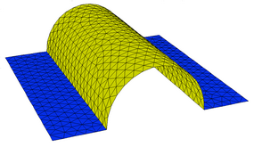
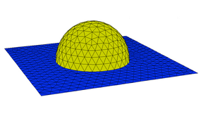

|
The EXTRUSION Section |

  
|
|
The EXTRUSION Section |
|
The layer structure of a three-dimensional problem is specified bottom-up to FlexPDE in the EXTRUSION Section:
EXTRUSION
SURFACE "Surface_name_1" Z = expression_1
LAYER "Layer_name_1"
SURFACE "Surface_name_2" Z = expression_2
LAYER "Layer_name_2"
. . .
SURFACE "Surface_name_n" Z = expression_n
The specification must start with a SURFACE and end with a SURFACE.
LAYERS correspond to the space between the SURFACES.
The Layer_names and Surface_names in these specifications are optional. The LAYER specifications may be omitted if a name is not needed to refer to them.
| • | Surfaces need not be planar, and they may merge, but they must not cross. expression_1 is assumed to be everywhere less than or equal to expression_2, and so on. Use a MIN or MAX function when there is a possibility of crossover. |
| • | Surface expressions can refer to regionally defined parameters, so that the surface takes on different definitions in different regions. The disjoint expressions must, however, be continuous across region interfaces. (see example "Samples | Usage | 3d_Domains | Regional_surfaces.pde") |
| • | If surface expressions contain conditional values (IF...THEN or MIN, MAX, etc), then the base plane domain should include FEATURES to delineate the breaks, so they can be resolved by the gridder. |
| • | Surfaces must be everywhere continuous, including across material interfaces. Use of conditionals or regional definitions must guarantee surface continuity. |
| • | Surface expressions can refer to tabular input data (see example "Samples | Usage | 3D_Domains | Tabular_surfaces.pde"). |
See the User Guide chapter Using FlexPDE in Three-Dimensional Problems for more information on 3D extrusions.
Shorthand form
Stripped of labels, the EXTRUSION specification may be written:
EXTRUSION Z = expression_1, expression_2 {, ...}
In this form layers and surfaces must subsequently be referred to by numbers, with surface numbers running from 1 to n and layer numbers from 1 to (n-1). SURFACE #1 is Z=expression_1, and LAYER #1 is between SURFACE #1 and SURFACE #2.
FlexPDE version 6 defines three surface generation functions
PLANE ( point1 , point2 , point3 ) |
Defines a plane surface containing the three stated points. |
CYLINDER ( point1 , point2 , radius ) |
Defines the top surface of a cylinder with axis along the line from point1 to point2 and with the given radius (see note below). point1 and point2 must be at the same z coordinate. Z-Tilted cylinders are not supported. |
SPHERE ( point , radius ) |
Defines the top surface of a sphere of the given radius with center at the specified center point (see note below). |
Each point specification is a parenthesized coordinate double ( xn , yn ) or triple ( xn , yn , zn ). If zn is omitted, it is assumed zero.
These functions can be used to simplify the layout of extrusion surfaces.
CYLINDER and SPHERE construct the top surface of the specified figure (see note below). To generate both the upper and lower halves of the CYLINDER and SPHERE, simply construct the figure at Z=0 and add and subtract the surface function from the desired Z coordinate of the center or axis.
Example:
DEFINITIONS
Zsphere = SPHERE((0,0,0), 10)
EXTRUSION
Zcenter-Zsphere, Zcenter+Zsphere
Note: These functions generate surfaces defined throughout X,Y space. CYLINDER and SPHERE include Z=constant skirts to extend the surface definitions. The diameters of the CYLINDER and SPHERE, as well as the extent of the CYLINDER along its axis and of the PLANE must be provided by REGION BOUNDARIES or FEATURES.

Page url: index.html?extrusion.html